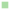

<!doctype html>
<html lang="en">
    <head>
        <meta charset="utf-8">
        <meta http-equiv="X-UA-Compatible" content="IE=edge">
        <meta name="viewport" content="initial-scale=1,user-scalable=no,maximum-scale=1,width=device-width">
        <meta name="mobile-web-app-capable" content="yes">
        <meta name="apple-mobile-web-app-capable" content="yes">
        <link rel="stylesheet" href="css/leaflet.css"><link rel="stylesheet" href="css/L.Control.Locate.min.css">
        <link rel="stylesheet" href="css/qgis2web.css"><link rel="stylesheet" href="css/fontawesome-all.min.css">
        <style>
        html, body, #map {
            width: 100%;
            height: 100%;
            padding: 0;
            margin: 0;
        }
        </style>
        <title></title>
    </head>
    <body>
        <div id="map">
        </div>
        <script src="js/qgis2web_expressions.js"></script>
        <script src="js/leaflet.js"></script><script src="js/L.Control.Locate.min.js"></script>
        <script src="js/leaflet-svg-shape-markers.min.js"></script>
        <script src="js/leaflet.rotatedMarker.js"></script>
        <script src="js/leaflet.pattern.js"></script>
        <script src="js/leaflet-hash.js"></script>
        <script src="js/Autolinker.min.js"></script>
        <script src="js/rbush.min.js"></script>
        <script src="js/labelgun.min.js"></script>
        <script src="js/labels.js"></script>
        <script src="data/ProbabilidadedeVazamento_1.js"></script>
        <script src="data/PossveisLocaiscomVazamento_2.js"></script>
        <script>
        var map = L.map('map', {
            zoomControl:true, maxZoom:28, minZoom:1
        }).fitBounds([[-29.807878601035096,-55.815820922889316],[-29.77356056922317,-55.762976904673174]]);
        var hash = new L.Hash(map);
        map.attributionControl.setPrefix('<a href="https://github.com/tomchadwin/qgis2web" target="_blank">qgis2web</a> &middot; <a href="https://leafletjs.com" title="A JS library for interactive maps">Leaflet</a> &middot; <a href="https://qgis.org">QGIS</a>');
        var autolinker = new Autolinker({truncate: {length: 30, location: 'smart'}});
        L.control.locate({locateOptions: {maxZoom: 19}}).addTo(map);
        var bounds_group = new L.featureGroup([]);
        function setBounds() {
        }
        map.createPane('pane_GoogleSatellite_0');
        map.getPane('pane_GoogleSatellite_0').style.zIndex = 400;
        var layer_GoogleSatellite_0 = L.tileLayer('https://mt1.google.com/vt/lyrs=s&x={x}&y={y}&z={z}', {
            pane: 'pane_GoogleSatellite_0',
            opacity: 1.0,
            attribution: '<a href="https://www.google.at/permissions/geoguidelines/attr-guide.html">Map data ©2015 Google</a>',
            minZoom: 1,
            maxZoom: 28,
            minNativeZoom: 0,
            maxNativeZoom: 20
        });
        layer_GoogleSatellite_0;
        map.addLayer(layer_GoogleSatellite_0);
        function pop_ProbabilidadedeVazamento_1(feature, layer) {
            var popupContent = '<table>\
                    <tr>\
                        <td colspan="2">' + (feature.properties['VALUE'] !== null ? autolinker.link(feature.properties['VALUE'].toLocaleString()) : '') + '</td>\
                    </tr>\
                </table>';
            layer.bindPopup(popupContent, {maxHeight: 400});
        }

        function style_ProbabilidadedeVazamento_1_0(feature) {
            if (feature.properties['VALUE'] >= 0.000000 && feature.properties['VALUE'] <= 20.000000 ) {
                return {
                pane: 'pane_ProbabilidadedeVazamento_1',
                shape: 'square',
                radius: 2.8,
                opacity: 1,
                color: 'rgba(35,35,35,0.0)',
                dashArray: '',
                lineCap: 'butt',
                lineJoin: 'miter',
                weight: 1,
                fill: true,
                fillOpacity: 1,
                fillColor: 'rgba(43,131,186,1.0)',
                interactive: false,
            }
            }
            if (feature.properties['VALUE'] >= 20.000000 && feature.properties['VALUE'] <= 40.000000 ) {
                return {
                pane: 'pane_ProbabilidadedeVazamento_1',
                shape: 'square',
                radius: 2.8,
                opacity: 1,
                color: 'rgba(35,35,35,0.0)',
                dashArray: '',
                lineCap: 'butt',
                lineJoin: 'miter',
                weight: 1,
                fill: true,
                fillOpacity: 1,
                fillColor: 'rgba(171,221,164,1.0)',
                interactive: false,
            }
            }
            if (feature.properties['VALUE'] >= 40.000000 && feature.properties['VALUE'] <= 60.000000 ) {
                return {
                pane: 'pane_ProbabilidadedeVazamento_1',
                shape: 'square',
                radius: 2.8,
                opacity: 1,
                color: 'rgba(35,35,35,0.0)',
                dashArray: '',
                lineCap: 'butt',
                lineJoin: 'miter',
                weight: 1,
                fill: true,
                fillOpacity: 1,
                fillColor: 'rgba(255,255,191,1.0)',
                interactive: false,
            }
            }
            if (feature.properties['VALUE'] >= 60.000000 && feature.properties['VALUE'] <= 80.000000 ) {
                return {
                pane: 'pane_ProbabilidadedeVazamento_1',
                shape: 'square',
                radius: 2.8,
                opacity: 1,
                color: 'rgba(35,35,35,0.0)',
                dashArray: '',
                lineCap: 'butt',
                lineJoin: 'miter',
                weight: 1,
                fill: true,
                fillOpacity: 1,
                fillColor: 'rgba(253,174,97,1.0)',
                interactive: false,
            }
            }
            if (feature.properties['VALUE'] >= 80.000000 && feature.properties['VALUE'] <= 100.000000 ) {
                return {
                pane: 'pane_ProbabilidadedeVazamento_1',
                shape: 'square',
                radius: 2.8,
                opacity: 1,
                color: 'rgba(35,35,35,0.0)',
                dashArray: '',
                lineCap: 'butt',
                lineJoin: 'miter',
                weight: 1,
                fill: true,
                fillOpacity: 1,
                fillColor: 'rgba(215,25,28,1.0)',
                interactive: false,
            }
            }
        }
        map.createPane('pane_ProbabilidadedeVazamento_1');
        map.getPane('pane_ProbabilidadedeVazamento_1').style.zIndex = 401;
        map.getPane('pane_ProbabilidadedeVazamento_1').style['mix-blend-mode'] = 'normal';
        var layer_ProbabilidadedeVazamento_1 = new L.geoJson(json_ProbabilidadedeVazamento_1, {
            attribution: '',
            interactive: false,
            dataVar: 'json_ProbabilidadedeVazamento_1',
            layerName: 'layer_ProbabilidadedeVazamento_1',
            pane: 'pane_ProbabilidadedeVazamento_1',
            onEachFeature: pop_ProbabilidadedeVazamento_1,
            pointToLayer: function (feature, latlng) {
                var context = {
                    feature: feature,
                    variables: {}
                };
                return L.shapeMarker(latlng, style_ProbabilidadedeVazamento_1_0(feature));
            },
        });
        bounds_group.addLayer(layer_ProbabilidadedeVazamento_1);
        map.addLayer(layer_ProbabilidadedeVazamento_1);
        function pop_PossveisLocaiscomVazamento_2(feature, layer) {
            var popupContent = '<table>\
                    <tr>\
                        <td colspan="2">' + (feature.properties['VALUE'] !== null ? autolinker.link(feature.properties['VALUE'].toLocaleString()) : '') + '</td>\
                    </tr>\
                    <tr>\
                        <td colspan="2">' + (feature.properties['Rua'] !== null ? autolinker.link(feature.properties['Rua'].toLocaleString()) : '') + '</td>\
                    </tr>\
                </table>';
            layer.bindPopup(popupContent, {maxHeight: 400});
        }

        function style_PossveisLocaiscomVazamento_2_0() {
            return {
                pane: 'pane_PossveisLocaiscomVazamento_2',
        rotationAngle: 0.0,
        rotationOrigin: 'center center',
        icon: L.icon({
            iconUrl: 'markers/blue-marker.svg',
            iconSize: [51.67999999999992, 51.67999999999992]
        }),
                interactive: true,
            }
        }
        map.createPane('pane_PossveisLocaiscomVazamento_2');
        map.getPane('pane_PossveisLocaiscomVazamento_2').style.zIndex = 402;
        map.getPane('pane_PossveisLocaiscomVazamento_2').style['mix-blend-mode'] = 'normal';
        var layer_PossveisLocaiscomVazamento_2 = new L.geoJson(json_PossveisLocaiscomVazamento_2, {
            attribution: '',
            interactive: true,
            dataVar: 'json_PossveisLocaiscomVazamento_2',
            layerName: 'layer_PossveisLocaiscomVazamento_2',
            pane: 'pane_PossveisLocaiscomVazamento_2',
            onEachFeature: pop_PossveisLocaiscomVazamento_2,
            pointToLayer: function (feature, latlng) {
                var context = {
                    feature: feature,
                    variables: {}
                };
                return L.marker(latlng, style_PossveisLocaiscomVazamento_2_0(feature));
            },
        });
        bounds_group.addLayer(layer_PossveisLocaiscomVazamento_2);
        map.addLayer(layer_PossveisLocaiscomVazamento_2);
        var baseMaps = {};
        L.control.layers(baseMaps,{' Possíveis Locais com Vazamento': layer_PossveisLocaiscomVazamento_2,'Probabilidade de Vazamento<br /><table><tr><td style="text-align: center;"></td><td>Baixa</td></tr><tr><td style="text-align: center;"></td><td>-</td></tr><tr><td style="text-align: center;"></td><td>Média</td></tr><tr><td style="text-align: center;"></td><td>-</td></tr><tr><td style="text-align: center;"></td><td>Alta</td></tr></table>': layer_ProbabilidadedeVazamento_1,"Google Satellite": layer_GoogleSatellite_0,},{collapsed:false}).addTo(map);
        setBounds();
        </script>
    </body>
</html>
